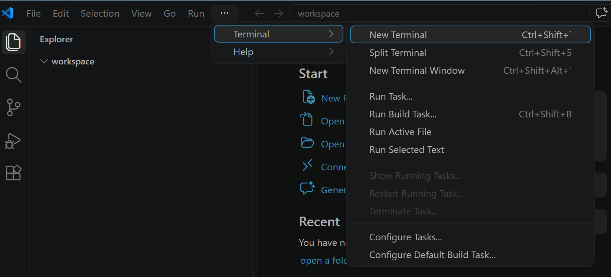
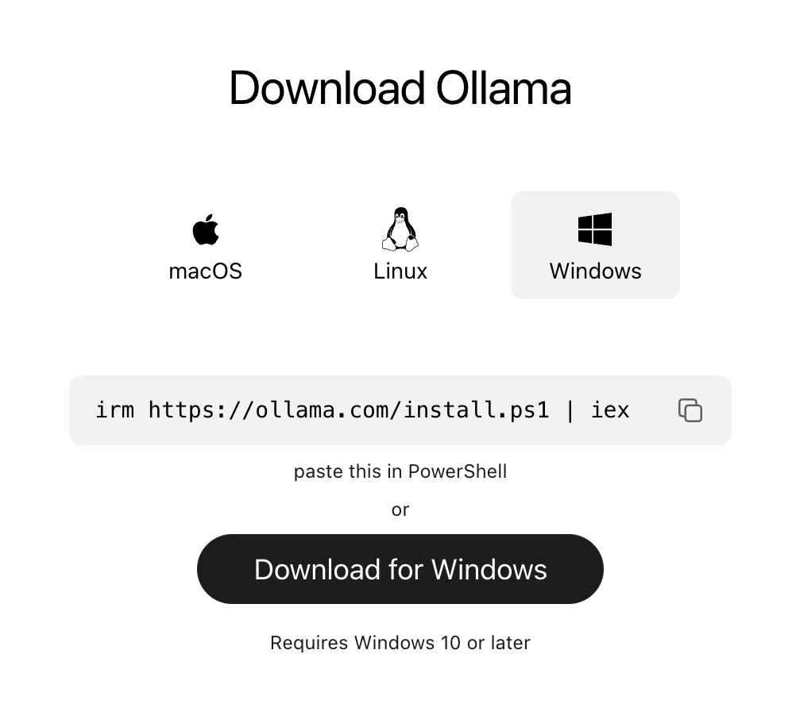
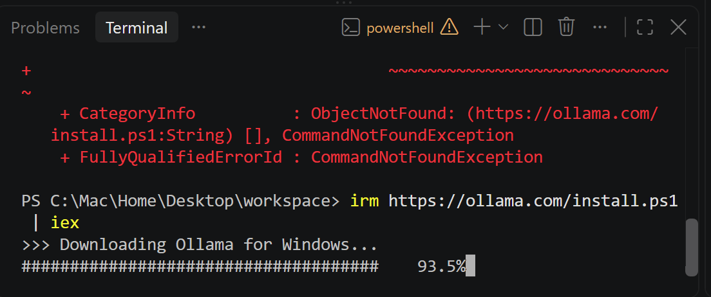
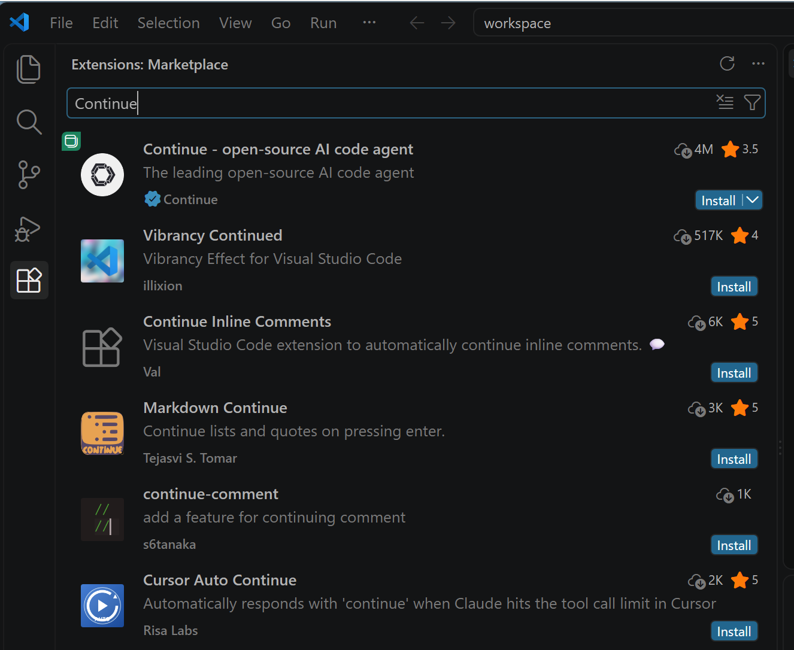
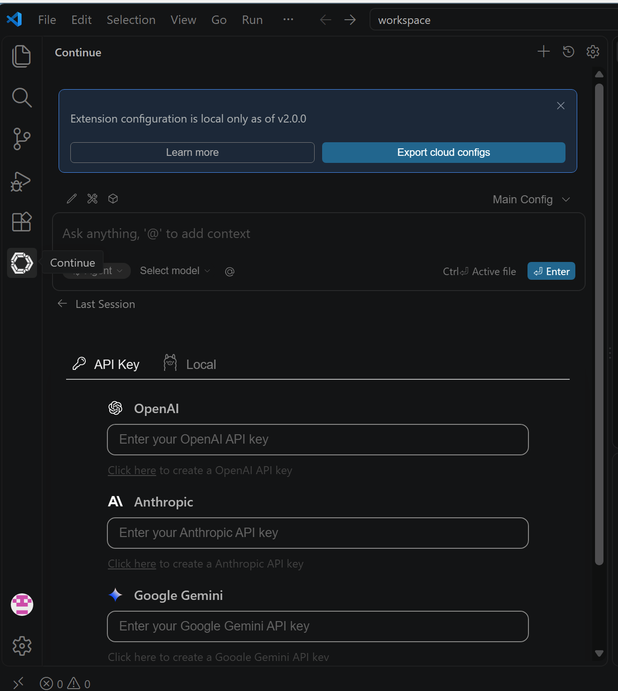
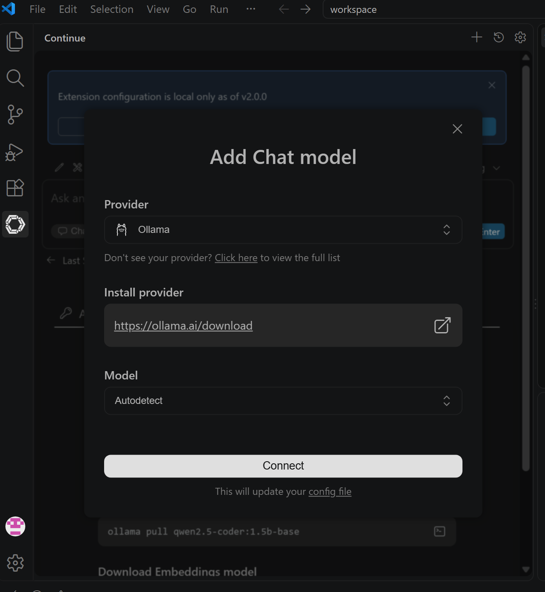
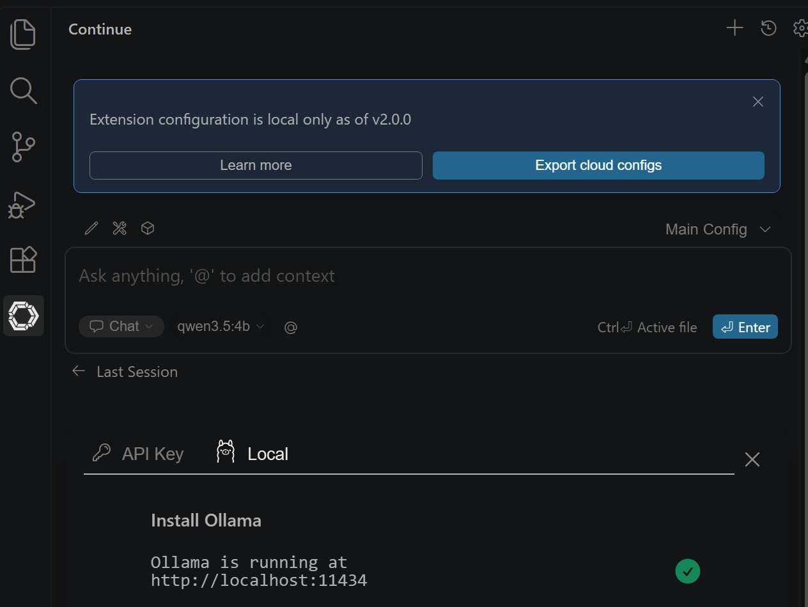

PART 1から先で使う道具を、先に入れておきます。VS Code、ターミナル、Ollama、モデル。所要20分ほどです。切り方も最後に扱います。うまくいかない箇所は必ず出るので、演習の途中ではなく、いま済ませます。
この演習ではファイルを開いて書き換えます。テキストエディタなら何でも構いませんが、PART 3でCline（VS Codeの拡張機能）を使うので、いま入れておくと後が楽です。
https://code.visualstudio.com/ からダウンロードして、インストーラを実行します。設定はすべて既定のままで構いません。
最初に File → Open Folder で、作業用のフォルダを開いてください。これを先にやらないと、ターミナルを開いても意図しない場所にいます。
3つの方法があります。どれでも同じものが開きます。
| 方法 | 操作 |
|---|---|
| メニュー | Terminal → New Terminal |
| ショートカット | Windows / Linux：Ctrl + Shift + `macOS： Control + Shift + ` |
| コマンドパレット | Ctrl（macOSは Cmd）+ Shift + P → 「terminal」と打つ |
` はバッククォートです。数字の1の左隣、または Shift + @ の位置にあります。シングルクォート（'）ではありません。

… に畳まれます。上の画像も、その状態から開いています。File / Edit / Selection / View / Go / Run の右にある … を押してください。その中に Terminal があります。Windowsでは、開いたターミナルが PowerShell であることを確認してください。次の節のインストールコマンドは、PowerShell以外では動きません。
| 見分け方 | |
|---|---|
| ターミナルの右上 | powershell と表示されている |
| 入力欄の先頭 | PS C:\...> で始まっている |
cmd や Git Bash になっている場合は、ターミナル右上の + の隣にある v を押して、PowerShell を選び直します。
pwd開いたフォルダのパスが表示されれば準備完了です。違う場所にいたら、File → Open Folder からやり直してください。ここを間違えると、このあとファイルが見つからない原因になります。
まだ入っていない場合は、公式サイトから入れます。https://ollama.com/download を開いて、自分のOSを選んでください。

方法は2つあります。どちらか片方でかまいません。
A. コマンドで入れる。上のページに表示されているコマンドをコピーして、PowerShellに貼り付けます。
irm https://ollama.com/install.ps1 | iexターミナルの開き方は2.3.1のとおりです。PowerShellであることを確認してから貼り付けてください。
実行すると、ダウンロードが始まります。

B. インストーラで入れる。同じページの「Download for Windows」ボタンを押し、ダウンロードした OllamaSetup.exe を実行します。コマンドに慣れていない場合はこちらのほうが確実です。
CommandNotFoundException と出る。PowerShell以外のターミナルで実行しています。2.3.1の「シェルを確かめる」に戻ってください。irm と iex は打ち間違えやすい部分です。macOSは同じページからアプリをダウンロードして開くだけです。Linuxは次の1行で入ります。
curl -fsSL https://ollama.com/install.sh | shollama --versionバージョンが表示されれば成功です。表示されない場合は、ターミナルを一度閉じて開き直してください。インストール直後は、PATHが反映されていないことがあります。
ターミナル（WindowsならコマンドプロンプトかPowerShell）を開いて実行します。
ollama --version
ollama list一覧に qwen3.5:4b が出てくれば準備できています。出てこない場合は取得します。
ollama pull qwen3.5:4bqwen3.8:27b は、研究室の共有サーバにあります。各自のPCには入れません。18GBあり、全員が落とすと回線も容量も持ちません。ollama list に qwen3.5:4b しか出なくても正常です。サーバへの接続方法は付録AのA.3.4にあります。
ollama run qwen3.5:4b短い質問を打ってEnter。抜けるときは /bye と入力します。
<think> タグの中に推論過程を出力してから、本当の答えが出ます。ノートPCでは、本文が出てくるまでに30秒以上かかることがあります。フリーズではありません。待ってください。
入れ方と同じくらい、切り方も先に知っておいてください。モデルはメモリを占有し続けます。27Bなら20GB近くです。切らないまま他の作業をすると、PCが重くなります。
ollama run のプロンプトが出ている状態から戻ります。
/byeCtrl + D でも同じです。ただし、これはターミナルの画面が戻るだけで、モデルはメモリに残っています。
いま何が載っているかを見ます。
ollama ps一覧に出たものを降ろします。
ollama stop qwen3.5:4bもう一度 ollama ps を実行して、消えていれば成功です。
ollama ps に 100% CPU と出て動作が遅いときは、明示的に ollama stop してから入れ直すと直ることがあります。
モデルを降ろしても、Ollamaのサーバは動き続けています。授業が終わったら、こちらも止めてください。
| OS | 止め方 |
|---|---|
| Windows | 画面右下のタスクトレイ（隠れているインジケーターの ^ の中）にあるOllamaのアイコンを右クリック → Quit Ollama |
| macOS | 画面右上のメニューバーにあるOllamaのアイコンをクリック → Quit Ollama |
| Linux | sudo systemctl stop ollama（サービスとして入れた場合）手で ollama serve を起動していたなら、その画面で Ctrl + C |
ollama run も、ClineからのAPI呼び出しも通らなくなります。「昨日は動いたのに」の原因の多くはこれです。sudo systemctl start ollama です。ollama ps を打ってください。エラーが返ればサーバが止まっています。空の一覧が返れば、サーバは動いていてモデルが載っていないだけです。
| やりたいこと | コマンド |
|---|---|
| 対話をやめる | /bye |
| いま載っているモデルを見る | ollama ps |
| モデルを降ろす | ollama stop <モデル名> |
| サーバごと止める | タスクトレイ / メニューバー から Quit |
| 入れたモデルを消す | ollama rm <モデル名> |
最後の ollama rm は、ダウンロードしたモデルのファイルごと削除します。27Bなら18GB空きます。使わなくなったモデルは消してください。消しても ollama pull で入れ直せます。
ここまでで、ターミナルからモデルを使えるようになりました。この節は必修ではありません。ただ、GitHub Copilotのようにエディタの横にチャットを出したい場合は、拡張機能をもう1つ入れます。
| Continue（この節） | Cline（PART 3で必修） | |
|---|---|---|
| やること | 質問に答える、選択範囲を書き換える、タブ補完 | 自分でファイルを読み書きし、コマンドを実行する |
| 人の作業 | 差分を見て、適用するか決める | 実行のたびに承認する |
| 近いもの | GitHub Copilot | 自律的に作業するエージェント |
Ctrl + Shift + X（macOSは Cmd + Shift + X）で拡張機能のパネルを開きます。検索欄に Continue と入れて、Install を押します。

入れると、画面左端のアイコンの列にContinueのアイコンが追加されます。ファイルのアイコンや虫眼鏡が縦に並んでいる、あの列です。
順に確かめてください。
| 状態 | やること |
|---|---|
| 左端のアイコン列そのものが見えない | Ctrl + B（macOSは Cmd + B）でサイドバーを開く。メニューからなら View → Appearance → Primary Side Bar |
| アイコン列はあるが、Continueが無い | 列の下に … が出ていれば、そこに畳まれています。押して開くか、ウィンドウを縦に広げる |
| それでも無い | Ctrl + Shift + P でコマンドパレットを開き、Continue と打つ。Continue: Focus on Continue View が出れば入っています。選べば開きます |
| コマンドパレットにも出ない | 入っていません。拡張機能のパネルに戻って、Installを押したか確認してください |
GitHub Copilotと同じ配置にしたい場合は、パネルを右へ移せます。3通りあります。
| 方法 | 操作 |
|---|---|
| ドラッグ | Continueのアイコンを右端へドラッグする。落とし先の枠が青く出たら離す |
| 右クリック | アイコンを右クリック → Move To → Secondary Side Bar |
| 先に領域を出す | 右側の領域が無い場合は Ctrl + Alt + B（macOSは Cmd + Option + B）で開く |
左に戻すときは、右クリック → Move To → Primary Side Bar です。
PART 3で入れるClineも、まったく同じ手順で右に置けます。左にファイル、中央にコード、右にAgent、という配置になります。
パネルを開くと、初回はモデルの設定画面が出ます。タブが2つあります。

× で閉じて構いません。
Localを押すと、Ollamaが検出されます。Ollama is running at http://localhost:11434 と緑のチェックが出れば、接続できています。
続けて、使うモデルを登録します。次の画面が出ます。

| 項目 | どうするか |
|---|---|
| Provider | Ollama のまま |
| Install provider | 押さなくてよい。Ollamaが未インストールの人向けの案内です |
| Model | Autodetect のままでよい。入っているモデルを自動で拾います |
| Connect | 押す。config.yaml が自動で更新されます |
手で設定を書く必要はありません。書く場合はこうなります。
models:
- name: Chat
provider: ollama
model: qwen3.5:4b
roles: [chat]
入力欄の下に、2つのドロップダウンが並びます。
| 左のドロップダウン | やること |
|---|---|
| Chat | 質問に答える。ファイルは触らない。これを選びます |
| Agent | ファイルを書き換え、コマンドを実行する |
| Plan | 変更計画を立てる |
既定では Agent になっていることがあります。押して Chat に変えてください。
右のドロップダウンが qwen3.5:4b になっていることも確認してください。
チャット欄に「こんにちは」と打ってください。返れば完了です。
コードを選択して Ctrl + L（macOSは Cmd + L）を押すと、選択範囲がチャットに入ります。「この関数は何をしている？」「テストを書いて」といったやり取りを、エディタを離れずにできます。
qwen3.5:4b は答える前に <think> を出すモデルです。04で見たとおりです。チャットなら待てますが、タブ補完には使えません。
灰色の候補が出るタブ補完は、チャットとは別のモデルが要ります。カーソルの前だけでなく、後ろのコードも見て間を埋める形式（fill-in-the-middle）に対応している必要があるためです。チャット用のモデルは、これを想定して作られていません。
補完は0.2秒で返らないと使いません。速さが正義です。小さいモデルを別に入れます。Continueの画面にも、この -base 付きのモデルが案内として出ます。
ollama pull qwen2.5-coder:1.5b-basemodels:
- name: Chat
provider: ollama
model: qwen3.5:4b
roles: [chat]
- name: Autocomplete
provider: ollama
model: qwen2.5-coder:1.5b-base
roles: [autocomplete]役割（roles）で使い分けます。VRAMに余裕があれば補完用を7Bに上げられますが、遅くなると使わなくなります。1.5Bから始めてください。
qwen2.5-coder:1.5b を足すユーザー名を講師に伝えてください。誰が完了したかを確認します。